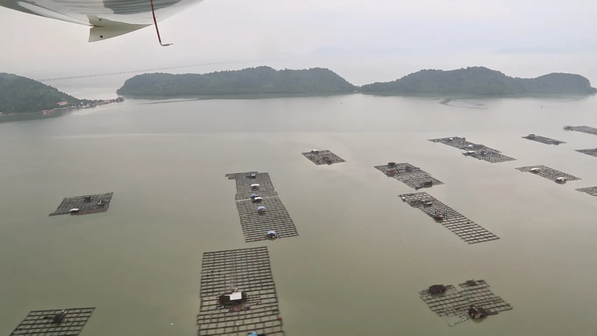

Nous quittons la Malaisie et les tours Petronas de Kuala Lumpur, pour le Laos où nous attend le prochain projet scientifique !
En vol, nous découvrons ce joli système de pêche : avec des filets posés sur l'eau, surplombés par des maisons et parfois attachés à des pirogues. La visibilité était déjà mauvaise à cet instant, puis elle s'est aggravée avec stratus bas et brouillard, nous obligeant à nous poser en Thaïlande, à Phuket.
Il s'agit maintenant d'expliquer que tout d'abord non, nous n'avons pas violé la loi thaïlandaise en déroutant pour cause de mauvaise météo, et qu'encore une fois non, dérouter ne veut pas dire qu'on est un mauvais pilote... Ils nous ont même dit de repartir immédiatement, malgré la mauvaise météo !
Plus d'info dans cet article de presse :
